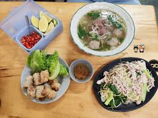

世界各地的越南料理
在越南以外，越南料理在有越南僑民居住的地區都很受歡迎，
如澳大利亞、美國、加拿大和法國。越南料理在日本、捷克、德國、
波蘭和俄羅斯以及其他亞裔聚居區也同樣受到歡迎。
近年來，越南料理也逐漸受到東亞和東南亞其他國家和地區的歡迎，
如韓國、寮國、香港、臺灣和泰國。
越南河粉（越南語：Phở／𡂄）、越南春卷（越南語：Gỏi cuốn／膾捲）、
越南米粉（越南語：Bún／𥻸）、越式肉麵包（越南語：Bánh mì／餅麵）、
蔗蝦（越南語：Chạo tôm）等，逐漸成為了越南料理的招牌菜。

首頁
第2頁
第4頁
第5頁